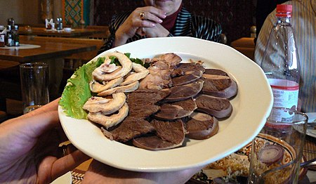
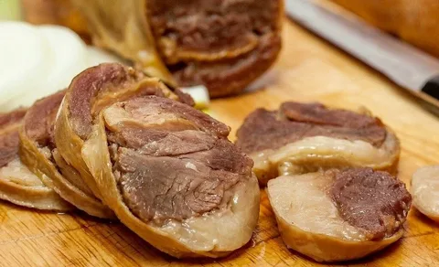
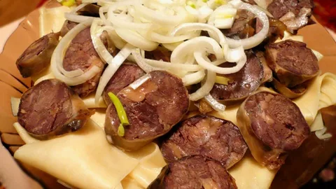
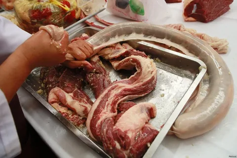
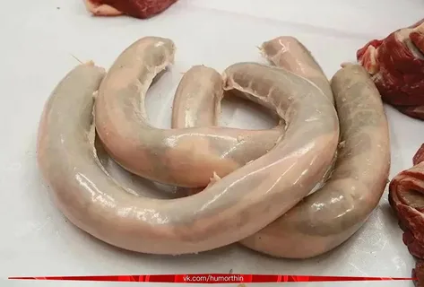
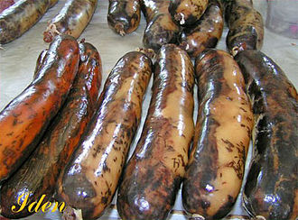

jhfw
ҚазыҚазақтардың ет даярлаудағы ең әйгілі ұлттық ерекшелікке ие тәсілдерінің бірі — қазы аудару. Жылқының ішегін жуып-тазартып, оған бір-бірлеп тілінген, әрі тұздалып, бұрыш сияқты дәмдендіргіштер қосылған жылқы қабырғасын майымен тығып, содан соң ішектің екі ұшын мықтап байлап арысқа асып кептіреді. Шамамен бір айда қазы мейіздей болып кебеді. Басқа іріқараның етінен жасалғаны шұжық деп аталады.
Қазы майдың қалыңдығы 5 сантиметрге дейiн шөгiнделуi нәтижесiнде пайда болады. Бұл бөлiк пiсiрiлген түрiнде де, сүрленген түрiнде де өте құнды боп саналады. Қазыны әзiрлеу үшiн көкiрек қуысының әрбiр жартысынан (бұлшық еттерi бойынша) сүйектiң, қабырғаның тұтастығын бұзбай 6-дан бастап, 17-мен аяқтай отырып кеседi. Қабырғаны омыртқадан ажыратады, жұбымен: алтыншыны жетiншiмен, сегiзiншiнi тоғызыншымен және т.б. кеседi. Әрбiр жұптан iшкi жағынан шемiршектерiн алады, қабырғалар арасындағы талшықтарды қабырғалардың омыртқамен қосылған жерiнен бастап олардың шемiршекпен қосылған жерiне дейiн кеседi.
  jhfw
Қазы қалай жасаладыЕкі жақтағы қабырғалар сүбессімен алынып, бір-бір қабырғадан қосып "шылбырлап" тілінеді. Жылқының семіздігі қазы майының қалыңдығымен өлшенеді.: Шынтақ, бір елі екі елі, ең семізі - табан, ішекке сыймағандықтан, тілген күйінде сақталатыны "дөңбес қазы" деп аталады. Қос қазы - қазының етек жағынанбастап, екі қабырғаны біріне-бірі түйістіре тығылған қазы. Көбіне қабырғаны сындырып тастап ішекке тығады. Тілімнің жуандығы малдың сеиміздігіне байланысты - қалыпты болса жалпақтау, қысқа болса жіңішкелеу ғып шылбырлай тіледі. Семіз жылқының ішегі өз қазысын аударуға жете бермейтіндіктен, сиырдың ішегін де пайдаланатындар бар. Қазыны ішекке аудармас бұрын, тұздап, усарымсағын ұнтақтап алаып, оған қара бұрышын қосып, қазыға араластырады. Ішекті е алдын ала тұз сіңіріп қояды. Аударған кезде ішекті тым тырсылдатпай, бос жасаса, ол піскенде ісініп , ішек жарылып кетуі мүмкін. Аударылып болған соң, ішектің екі ұшы түйіріледі. Қазыны асқан кезде ол жарылып кетпес үшін ішекті қазанға дәкемен орап асады. Қазы ең кәделі ас болғандықтан, ол - әр дастарқан, әр табақтың сәні. Сондықтан ол бір-екі білемнен табаққа қойылады. Е тураушы өткір пышақпен қиғаштай турап, айналасындағыларға бір-бір тіліп сыбаға үлестіріп, қалғанын туралып болған еттің үстіне турап тастайды. Еттің дәмін келтіріп, қосып жесін деген ниетпен.
Қазының әрбiр қабатына тұздау қоспасын не тұз себедi, 24 сағат сақтайды, тұзсу құяды және 2-3 тәулiк сақтайды. Одан соң қабырғаларды суық суға шылап қояды да, 1-2 сағат жылы сумен шаяды. дайын қабырғаларды жылқы не сиыр iшегiне салып, жiппен байлайды. Iшек қабатындағы қазыны 50-60 С-та қою түтiнге 12-18 қақтайды және 12 С-тық температурада 2-3 сағат салқындатады.[1] Кере қазы, сере қазы — семіздің бармақ пен шынашақ арасына тең қазы. Табалдырық қазы — аса қалың, айналдыруға келмеген өте семіз қазы; кей жерлерде табан қазы деп атайды. Би қазы — бүйен ішекке тыққан, шұжық тәрізді жуан қазы. Дөңбек қазы (бұжбан қазы) — ішекке сыймағандықтан тілкем күйінде сақталған қазы.
  jhfw
jhfw